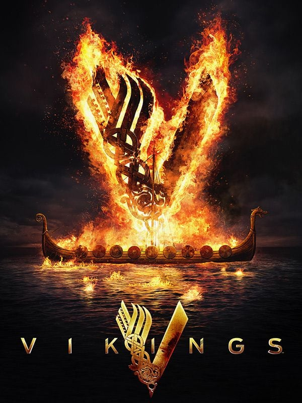
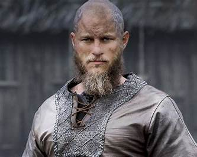

1. Ragnar está inspirado en las leyendas nórdicas
Ragnar Lothbrok aparece en diferentes relatos y sagas nórdicas. La serie toma estas historias como inspiración para construir al personaje.
¿Cuánto hay de historia y cuánto de leyenda en Vikingos? Estos datos te ayudan a mirar con otros ojos a sus personajes y al mundo que los rodea.

Ragnar Lothbrok aparece en diferentes relatos y sagas nórdicas. La serie toma estas historias como inspiración para construir al personaje.
Los viajes de Ragnar empiezan mucho antes de zarpar: hacen falta barcos capaces de llevarlo lejos. Por eso el trabajo de Floki tiene tanto peso en la historia.
El personaje de Lagertha está inspirado en relatos sobre una guerrera mencionada en antiguas historias escandinavas.
Aunque la historia transcurre en diferentes lugares de Europa, gran parte de las escenas de la serie fueron realizadas en Irlanda.
Las referencias a Odín, Thor y Loki aparecen en charlas, rituales y decisiones. Para los personajes, sus dioses y la idea del Valhalla forman parte de la vida diaria.
La serie comenzó en 2013 y finalizó después de seis temporadas. Durante su historia aparecen diferentes generaciones de personajes.

Ragnar mira el mar y ve una posibilidad. Esa inquietud lo mueve a salir de lo conocido, aunque sus viajes también cambien la vida de quienes se quedan esperando.